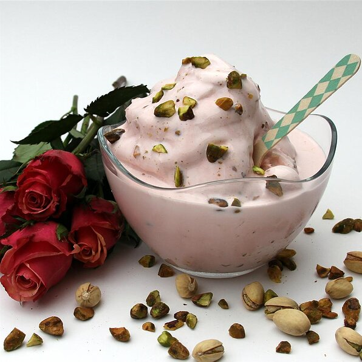

Rose Ice Cream

Description
Ingredients
- 30 regular marshmallows
- 1/3 cup strong coffee
- 1/2 teaspoon vanilla extract
- 1 ripe banana, mashed
- 1 cup heavy whipping cream
- 1 tablespoon grated chocolate,or to taste
Steps
- Put a metal bowl and metal beaters in the refrigerator to chill for at least 15 minutes.
- Melt marshmallows and coffee together in top of a double boiler over simmering water, stirring frequently and scraping down the sides with a rubber spatula to avoid scorching. Stir banana and vanilla extract into marshmallow mixture; set aside to cool.
- Pour cream into the chilled bowl and beat using electric mixer with cold beaters on high speed until stiff peaks form. Gently fold whipped cream into marshmallow mixture until well incorporated. Spoon or pipe mixture into small dessert dishes; garnish with chocolate shavings. Refrigerate until chilled, at least 30 minutes.